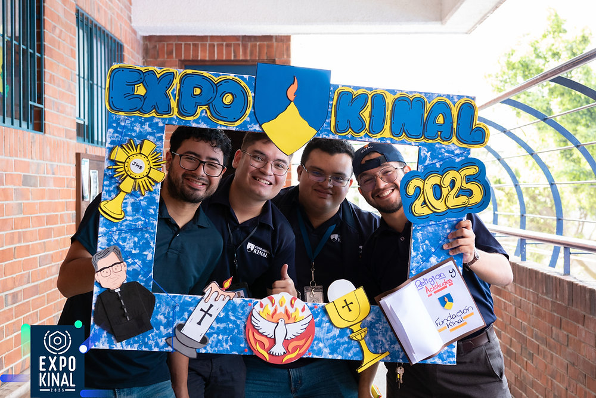
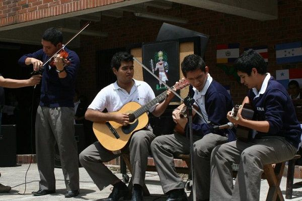

Misión
Formar a jóvenes y adultos a través de una educación integral, con énfasis en las áreas técnicas y tecnológicas, influyendo positivamente en su trabajo, su familia y la sociedad.

Formar a jóvenes y adultos a través de una educación integral, con énfasis en las áreas técnicas y tecnológicas, influyendo positivamente en su trabajo, su familia y la sociedad.
Ser líderes en la formación técnica, tecnológica y humana de la región, brindando una excelente preparación integral a jóvenes y adultos, logrando su superación personal y profesional.
• Visión cristiana de la vida.
• Respeto a la dignidad de la persona.
• Espíritu de servicio.
• Trabajo bien hecho.
• Libertad personal responsable.

¡Muchas Gracias Por Asistir a Expo Kinal 2025! A cada una de las casi 6,000 personas que nos acompañaron en Expo Kinal … ¡GRACIAS de corazón! Nuestros alumnos dieron lo mejor de sí, mostrando con orgullo sus proyectos técnicos y tecnológicos. Con pasión, creatividad y mucho esmero, demostraron lo que se aprende cuando se forma con excelencia. Fue un día lleno de emoción, aprendizajes, innovación y comunidad ¡Y nada de esto hubiera sido posible sin ustedes! ¡Nos vemos en la próxima edición!
 (1).avif)




En Fundación Kinal, contamos con un grupo excepcional de profesionales y empresarios que conforman nuestro Patronato. Este equipo dedicado y comprometido juega un papel crucial en el sostenimiento de nuestra institución, gestionando recursos económicos que nos permiten continuar con nuestra misión.
Fundación Kinal es un Centro Educativo sin fines de lucro, cuya misión es ofrecer educación de calidad a jóvenes de escasos recursos, brindándoles las herramientas necesarias para que puedan construir un futuro mejor. Gracias al esfuerzo incansable del Patronato, podemos seguir impactando positivamente la vida de cientos de estudiantes, ayudándoles a alcanzar sus sueños y contribuir al desarrollo de nuestra sociedad.
Cada miembro del Patronato de Fundación Kinal comparte nuestra visión y se une a nosotros en la noble labor de transformar vidas a través de la educación. Su liderazgo y generosidad son fundamentales para que Fundación Kinal siga siendo un pilar en la comunidad, comprometida con la formación integral de nuestros estudiantes.

Correo: dgrafico@kinal.org.grt
6 avenida 13-54 zona 7, Colonia Landívar, 01007 Ciudad de Guatemala, Guatemala, C.A.
Electricidad Industrial
infoets@kinal.org.gt
infotic@kinal.org.gt
infobas@kinal.org.gt
infocet@kinal.org.gt
Kinal es un Centro Educativo privado, no lucrativo, dirigido a la formación técnica profesional de jóvenes y adultos, de beneficio colectivo y asistencia social en favor de los sectores más necesitados de la comunidad. Nuestro valor fundamental es enseñar a realizar el trabajo bien hecho, que sea la base de la superación de alumnos y el medio para servir a los demás.